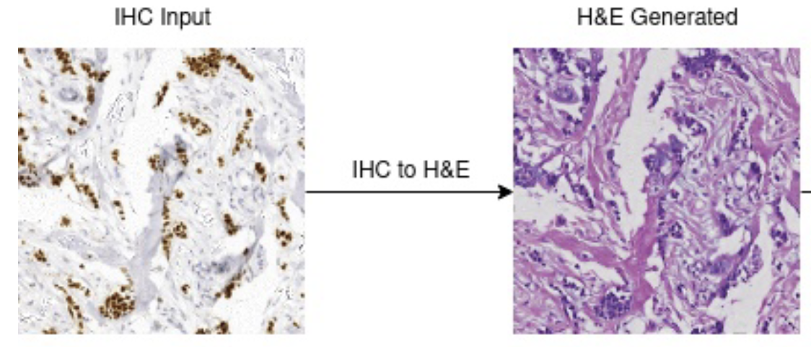

Featured · USCAP '25
Generating Digital Stains Via Neural Schrödinger Bridge in Pathology Images
Our UNSB approach enables unpaired image-to-image translation of IHC to H&E at whole-slide level, making virtual staining more accessible for cancer diagnosis.
Read publication ↗